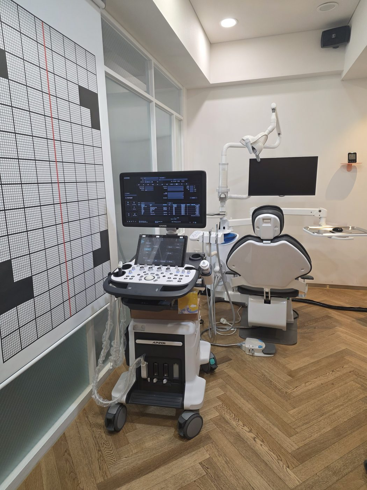
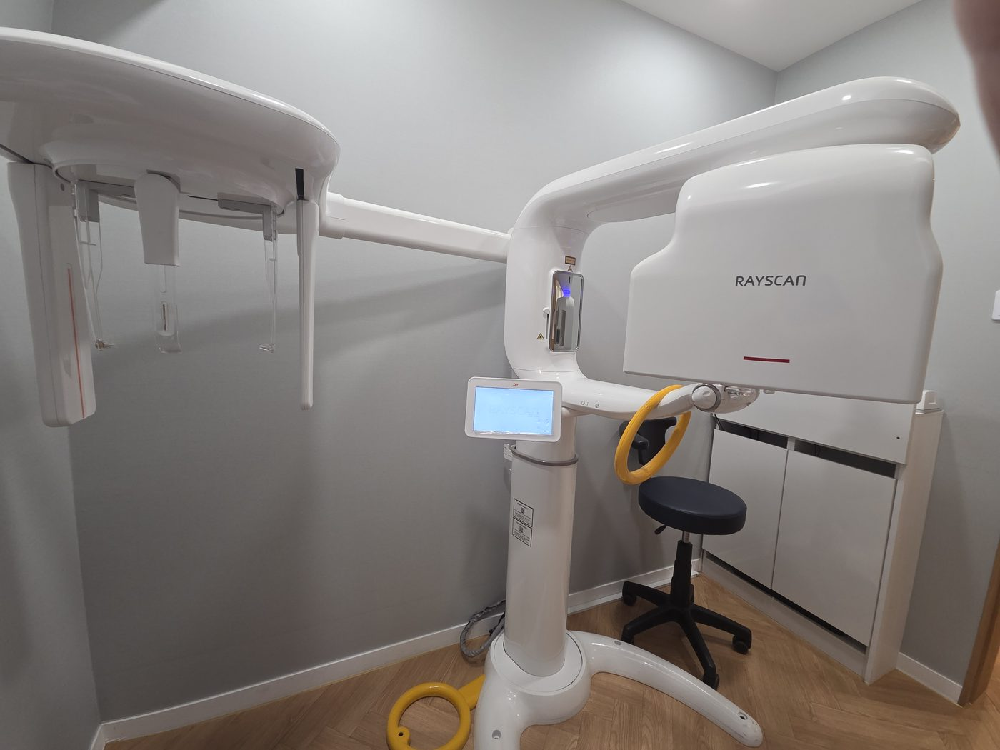
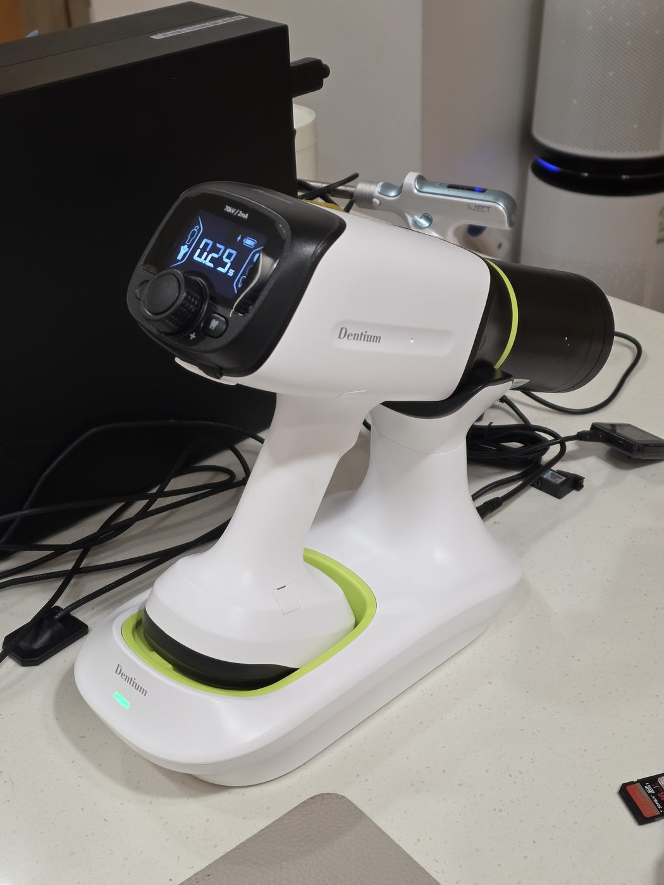
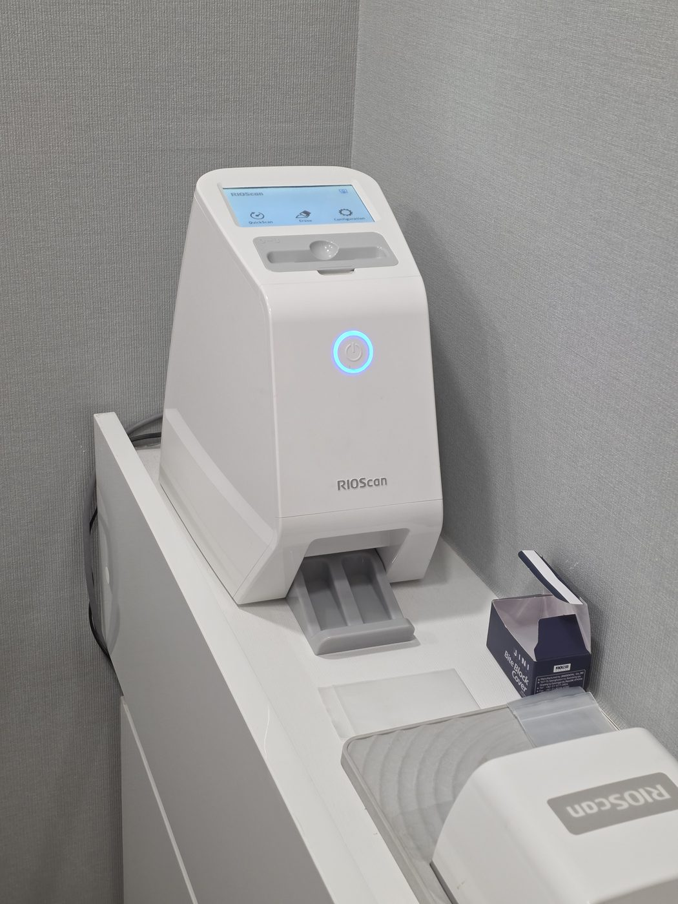
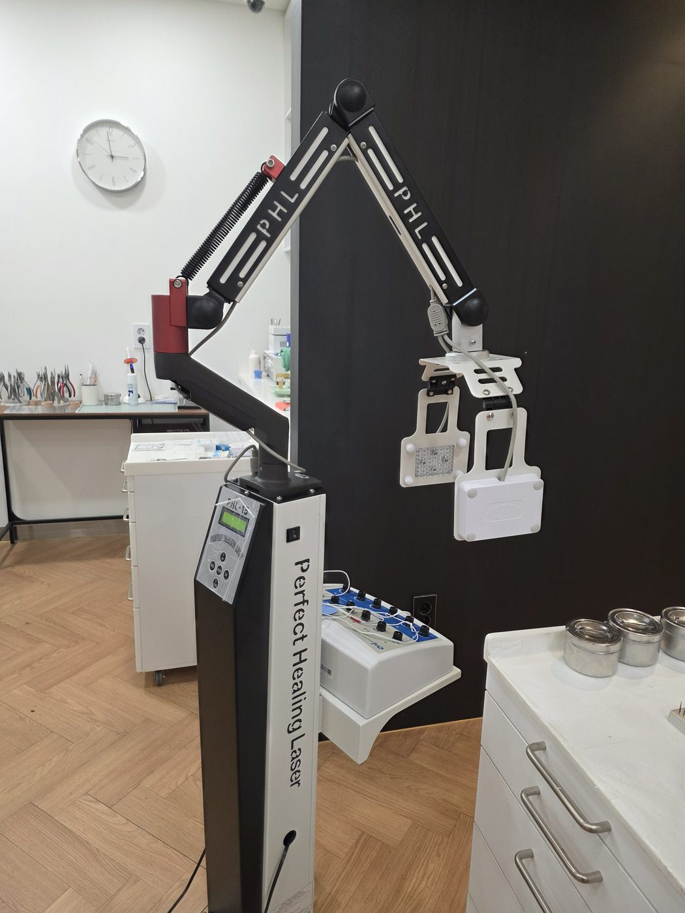
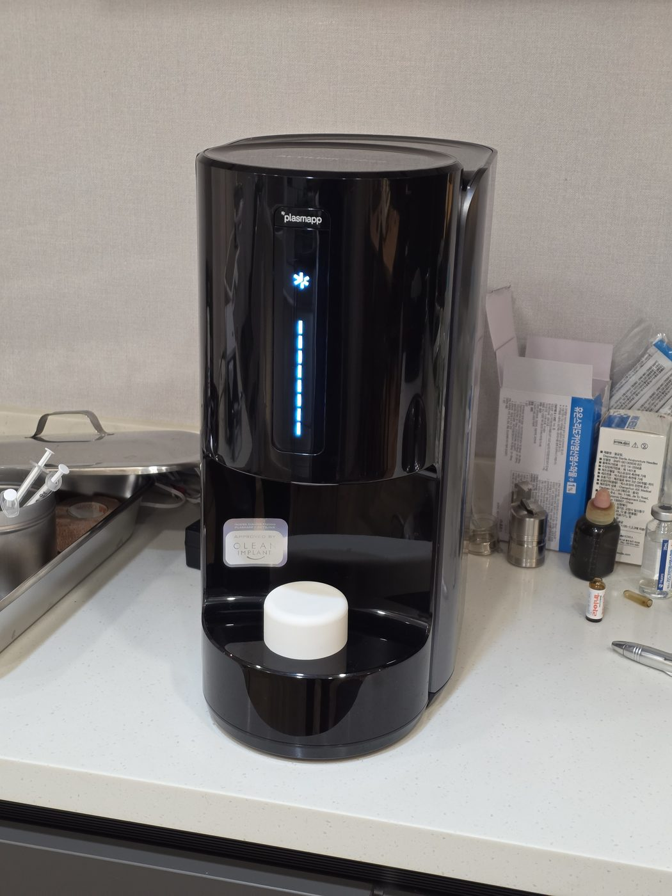
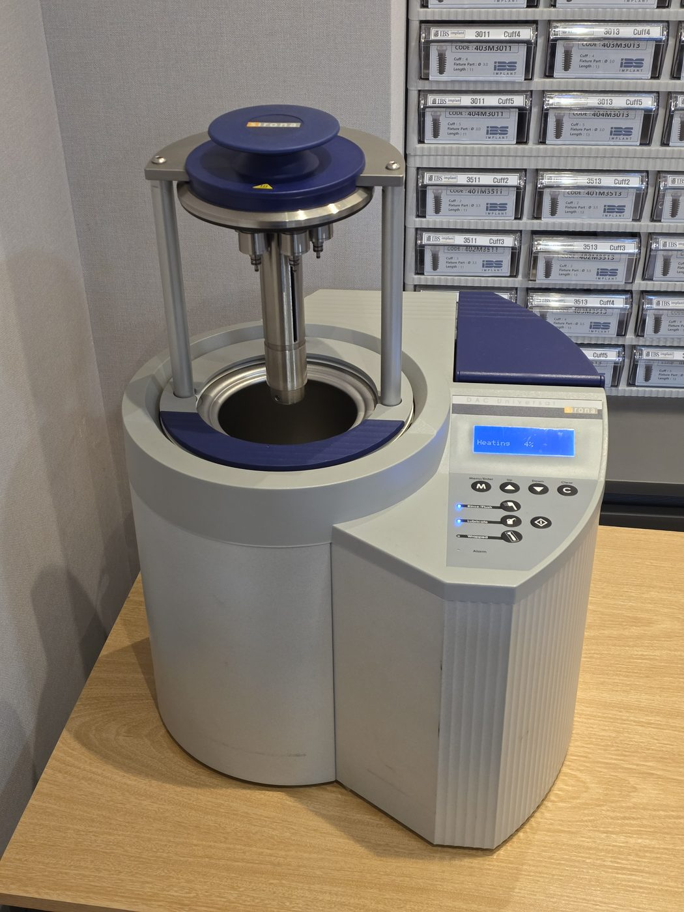
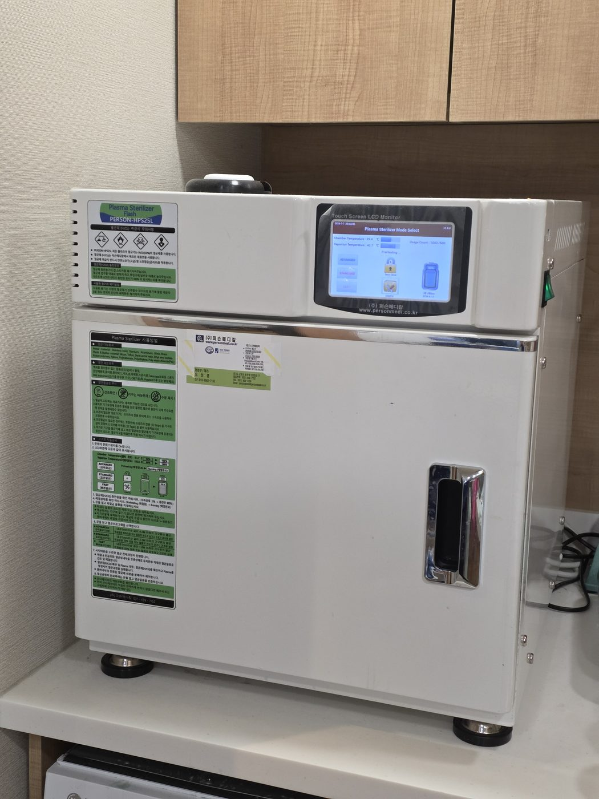
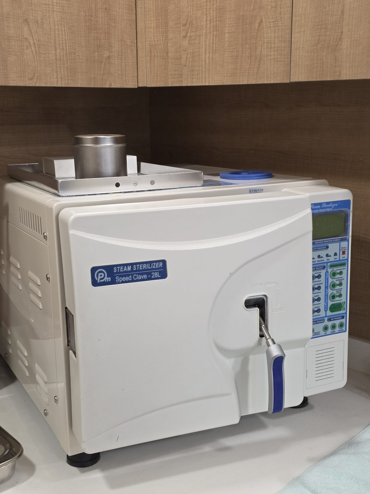

정확한 진단, 비수술적 치료, 그리고 보이지 않는 감염 관리까지 —
진료의 전 과정에 필요한 장비를 갖추고 있습니다.

방사선 노출 없이 턱관절 주변 근육과 인대, 연조직을 실시간 영상으로 확인합니다. 턱을 움직일 때의 상태를 그대로 관찰할 수 있어 턱관절 진단에 유용합니다.

치아, 턱뼈, 턱관절을 3차원 영상으로 촬영하는 디지털 CT입니다. 턱관절 상태 평가와 임플란트 식립 계획 수립에 필요한 정보를 정밀하게 확인합니다.

진료 체어에서 이동과 자세 변경 없이 필요한 순간 바로 촬영합니다. 치료 중간에도 즉시 확인할 수 있어 진료 흐름이 편안합니다.

구내 촬영 영상을 고해상도 디지털 이미지로 변환합니다. 미세한 충치, 뿌리 끝 병소까지 세밀하게 판독하는 데 활용합니다.

턱관절과 근육의 통증 부위에 적용하는 치유 레이저 물리치료 장비입니다. 절개나 마취 없이 통증 관리와 조직 회복을 돕는 비수술적 치료에 사용합니다.

임플란트 식립 직전, 픽스처 표면을 플라즈마로 세정·활성화하는 장비입니다. 표면의 친수성을 높여 뼈와 잘 결합할 수 있는 조건을 만들어 줍니다.

입안에 직접 닿는 핸드피스를 매 환자마다 내부 관로까지 세척하고 멸균합니다. 겉면 소독만으로는 닿지 않는 부분까지 관리합니다.

고온에 약한 정밀 기구를 과산화수소 저온 플라즈마 방식으로 멸균합니다. 기구 특성에 맞는 멸균 방식을 구분해 적용합니다.

고온·고압 증기로 진료 기구를 멸균하는 기본 감염 관리 장비입니다. 멸균 후 포장 상태로 보관하여 사용 직전까지 청결을 유지합니다.